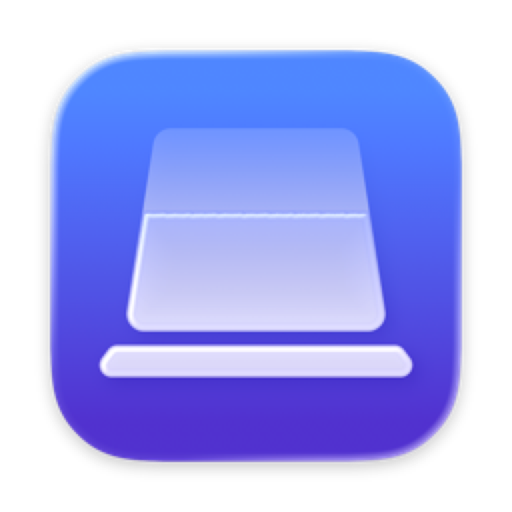

Наклон
Закройте крышку — экран уйдет вглубь.
Пока вы закрываете MacBook, картинка отклоняется назад, размывается и гаснет, словно уходит внутрь. Открыли снова — все на месте.

Как это выглядит
Крышка идет вниз — экран уходит вглубь.
Запись с настоящего MacBook. Здесь эффект проигран кнопкой «Показать эффект», а с крышкой он идет точно за ее углом: чуть прикрыли — чуть отклонился.
Возможности
Эффект, который видно краем глаза.
Наклон читает датчик угла крышки несколько раз в секунду и перерисовывает экран через Metal на его частоте. Эффект появляется сам, когда крышка проходит заданный угол, и уходит, когда ее открывают.
По углу крышки
Эффект начинается ниже выбранного угла и набирает силу, пока крышка закрывается. Одна схема в окне показывает, где он начнется и где будет в полную силу.
Живая картинка
Под эффектом продолжает идти то, что на экране: видео, звонок, анимация. Можно оставить и один кадр — так легче для батареи.
Под ваш взгляд
Размытие, тень, отклонение и перспектива настраиваются ползунками.
Без крышки
Кнопка «Показать эффект» проигрывает закрытие на том, что сейчас на экране.
Сам запускается
Стартует вместе с Mac и тихо живет в строке меню. Закрыли окно — программа осталась там же.
Приватность
Экран остается на экране.
Чтобы наклонить картинку, Наклону нужно видеть экран, поэтому macOS спросит доступ к записи экрана. Вот что с этой картинкой происходит.
Кадры не сохраняются
Изображение живет только в видеопамяти, пока идет эффект: не пишется на диск, не попадает в буфер обмена и никуда не отправляется.
Только пока закрывается крышка
Захват начинается, когда крышка идет вниз, и прекращается через пару секунд после того, как она остановилась. В остальное время его нет.
Интернет не нужен
В сеть приложение выходит только раз в сутки проверить новую версию, и это выключается в настройках.
Без учетных записей и аналитики
Нет серверов, счетчиков и регистрации. Приложение не знает, кто вы.
Установка
Три шага до первого наклона.
Скачайте
Откройте файл Naklon.dmg и перетащите Наклон в папку «Программы».
Разрешите запуск
При первом запуске macOS покажет предупреждение — нажмите «Готово». Затем откройте «Системные настройки» → «Конфиденциальность и безопасность» и внизу нажмите «Все равно открыть».
Разрешите запись экрана
Наклон попросит доступ к записи экрана. Включите его в «Системных настройках» и перезапустите программу. Дальше она будет сама запускаться вместе с Mac и жить в строке меню.
Наклон распространяется свободно, напрямую от автора, без App Store и платной проверки Apple. Поэтому при первом запуске macOS просит подтвердить, что вы доверяете приложению. Это нужно сделать всего один раз.
Вопросы и ответы
Какой Mac нужен?
MacBook с процессором Apple Silicon и macOS 26 или новее. Эффект работает от датчика угла крышки, а он есть не у всех моделей. Если датчика нет, Наклон скажет об этом в первом же окне.
Зачем доступ к записи экрана?
Картинка, которая отклоняется и гаснет, — это ваш экран. Без доступа Наклону нечего наклонять. Кадры не сохраняются и никуда не уходят, подробно — в политике конфиденциальности.
Мешает ли эффект работать?
Нет. Он появляется только ниже угла начала, а щелчки проходят сквозь него к программам под ним. Эффект можно выключить одним переключателем в строке меню.
А с внешним монитором?
Эффект показывается только на встроенном экране. Когда крышка закрыта и Mac работает от внешнего монитора, эффекта нет.
Что будет, когда крышка закроется совсем?
Mac уснет, как обычно. После пробуждения Наклон начнет следить за крышкой заново.
На чем он основан?
Движок эффекта основан на открытой программе Mac Duo (автор Makito, лицензия Apache 2.0). Наклон — ее версия с новым интерфейсом, настройками на русском и английском и схемой крышки в окне.
Как его закрыть совсем?
Закрытие окна и ⌘Q убирают Наклон в строку меню. Выйти полностью — кнопкой «Выйти» в панели значка, а автозапуск выключается в настройках.
Как связаться с автором?
Пишите в Telegram @iamartempn — туда же вопросы, ошибки и предложения.
Попробуйте Наклон.
Бесплатно. Без регистрации. Без интернета.
Вопросы и поддержка — в Telegram @iamartempn